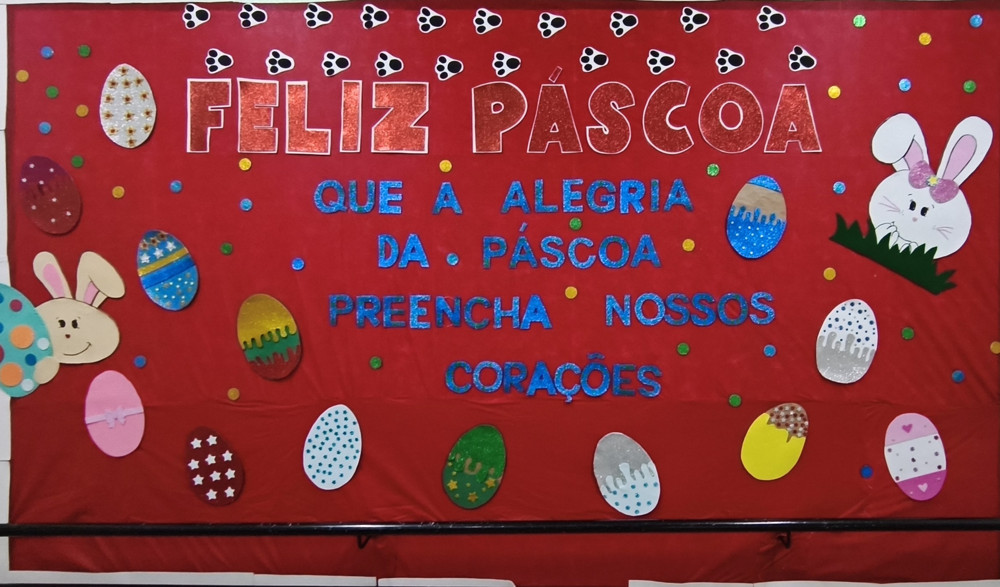

Uma reportagem do colégio sobre simbolismo, convivência e os sentidos educativos da data.

Reportagem do colégioFilosofiaCotidiano
Anotação do colégio
A Páscoa também pode ser lida como um momento de reflexão sobre valores, convivência e significado coletivo. A reportagem dialoga com Filosofia porque ajuda a pensar o sentido das tradições e a relação entre cultura, respeito e vida em comunidade.
Matéria ligada
Leia a conexão com perguntas filosóficas do dia a dia e com as escolhas que fazemos.